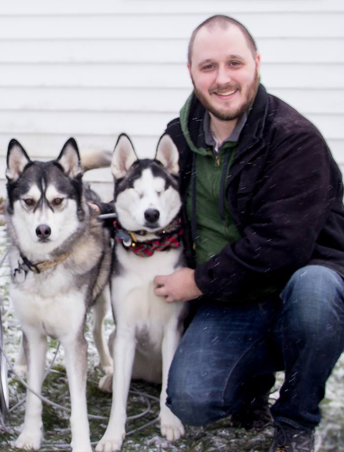

About Me
Technologist, consultant, amateur radio operator

Hi there! I'm Benjamin, a technologist with over 25 years of experience in the IT industry. I have a passion for creating interactive websites, collecting and analyzing data, and all things tech-related. I have a diverse skill set and a wealth of experience in a wide range of IT-related fields, including desktop support, network administration, server administration, software development, cyber security, telecommunications, video conferencing, and team management.
For the last 13 years, I've been working in the IT department of a non-profit mental health and disability advocacy organization. I've been able to put my skills to use in a meaningful way, and I've secured and maintained the organization's IT systems and made sure our remote work environment is running smoothly.
In addition to my work in the non-profit sector, I've also been running my own consulting agency for the past 20 years. My agency specializes in web application development, database management, Drupal development, and PHP development. My extensive experience as a consultant has given me a deep understanding of web development technologies and frameworks, as well as the ability to run and grow a successful business.
Hobbies & Interests
When I'm not working, I can be found pursuing my many hobbies. I'm an amateur radio operator, and I have a passion for experimenting with electronics, home automation, and photography. I also enjoy hiking, camping, playing open-world and simulator video games, and brewing beer and meads at home.
Birdwatching has become a particular passion — I run a live camera pointed at my backyard bird feeders, stream it publicly, and use AI (BirdNET-Pi) to automatically identify species by their calls. You can watch the feed at live.bentownsend.com.
Amateur Radio
I hold an FCC Amateur Radio Extra Class license. I serve as Secretary, Webmaster, and former Vice President of the Fulton Amateur Radio Club, and volunteer as a licensed Examiner and instructor for Technician and General class licensing courses. I'm also a trained NOAA NWS Skywarn Severe Weather Spotter and provide volunteer communications support for community events including running races, bicycle races, and local festivals.